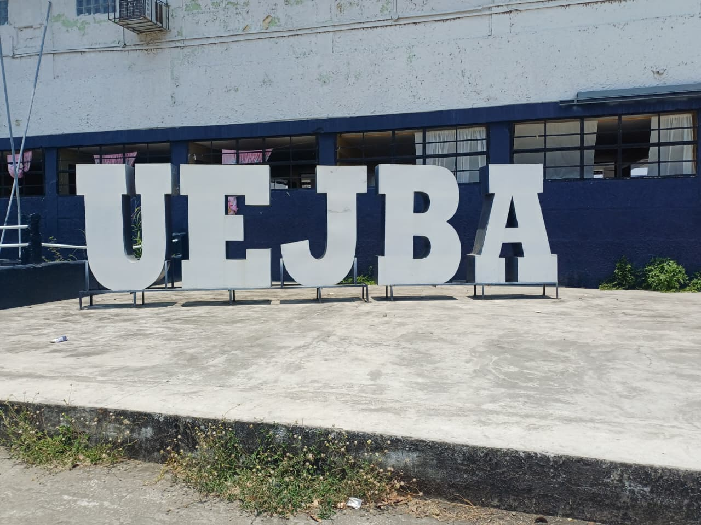

La Unidad Educativa Fiscal "Juan Bautista Aguirre" es una institución comprometida con la excelencia y la formación integral de sus estudiantes, alineada con los más altos estándares de calidad educativa. Nuestra misión es formar líderes emprendedores, honestos y con una sólida cultura de trabajo, quienes estén capacitados para insertarse de manera activa en la sociedad y contribuir al desarrollo sostenible de su comunidad y país.
Nos enfocamos en educar personas integrales, promoviendo valores éticos, responsabilidad social, y habilidades que fomenten la innovación y el espíritu emprendedor. La Unidad Educativa busca proporcionar un ambiente adecuado para el aprendizaje, con profesores capacitados y recursos que permitan potencializar las capacidades de los estudiantes, preparándolos para afrontar los retos académicos y laborales del mundo actual.
Nuestro compromiso es sembrar en cada alumno la pasión por el conocimiento, la perseverancia y la voluntad de servir a la sociedad, formando así ciudadanos comprometidos con el bienestar colectivo y el progreso de Daule y Ecuador en general.
